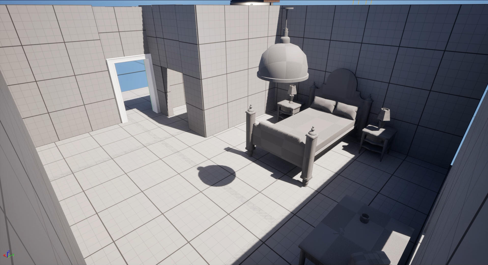
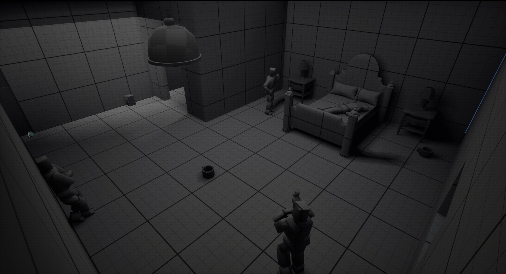

Early Access
Horror Puzzle Game.
About the game
You said yes to playtesting their game.
A message pops up on your screen.
You download the game. Your PC warns you it might be unsafe. You ignore the warning.You ignore the warning.
The game starts. You're immediately connected to a Discord call with the friendly devs, who guide you through their atmospheric murder mystery set in a beautifully old 1970s hotel.
One dev even actively fixes bugs as you report them.
But suddenly, things start to feel off.
Rooms appear that shouldn't exist. You're teleported unpredictably, becoming increasingly disoriented.
Textures vanish, objects distort, the game logic breaks down around you.
Then you hear laughter and a voice you don't recognize.
„Someone else is here. And they're changing everything"
Can you escape the game?
Screenshots & Insights
.png)
A behind the scenes look at the game, showing both the hotel lobby and the connection status that tells you the devs are still watching over your session.
.png)
A peek into one of the hotel rooms, though it looks like the 3D artist forgot to place the NPCs.
.png)
Another quiet corner of the hotel, right before things start to shift.
.png)
The hotel hallway, right as the game slowly starts falling apart around you.
.png)
Close up shots of individual props from the hotel room, showing more detail in the 3D assets.
The story behind it
Early access was my first duo game. We had four months, and I got to learn a lot along the way.
Before this, I had only ever organized myself over a long stretch of time, planning my own schedule alone. This project taught me what it means to organize as a team of two, and how to make sure both people are actually happy with how things are running.
In the beginning, I pitched my colleague around 20 possible game ideas, and together we picked one. Of course it was still just a rough concept at that point, so I developed it further, and we kept coming back to it together, figuring out what could still be improved, until we finally arrived at the game it is today.
From there we got straight to work and split the tasks: Simon was responsible for coding, making sure everything ran smoothly and worked the way it should, while I was in charge of everything visual, from 3D and 2D art to level design, game design, and lighting.
This semester I got to learn a lot about lighting specifically, and I really improved in that area, which helped me communicate mood and atmosphere much more effectively.
But what I loved most was watching how we grew together, both as a team and through the project itself.
And my biggest takeaway, the thing that helped us more than anything: communication and trust. That is the key to so much of this.
Behind the Scenes
A quick run through the room as it slowly came together.
In the story behind it I already talked about how much I learned about lighting. What I didn't expect was how hard it would be to actually nail the feeling I wanted.
Early Access is a game inside a game, and that inner game isn't finished. So it couldn't look too polished, but it still had to feel mysterious and a little creepy. Getting both at once was the real challenge.

I started with the blockout. First I worked out how big the room should be. Big enough to read as a hotel room, but not so open that it feels off. Then I dropped in the first rough assets and started testing.
Something felt wrong the whole time, and I'm a little embarrassed by how long it took me to see it. My bed was way too big. I honestly walked past it for ages. It only clicked when I stopped and asked myself one thing.
"Okay, how would a player see this for the very first time?"
That question saves me every time. It gives me fresh eyes and pulls me out of the spots where I've quietly gotten stuck without noticing. So I'll leave it here for you too.

With the bed fixed, everything suddenly clicked into place. So I moved on to the story parts and started placing the NPCs, thinking about where each piece should sit. Easy enough for the player to follow, but not too easy.
It's a room where a murder happened, so there are police standing around. Right now they're just blocks, because the 3D designer in the game never got around to modelling them (i swear it's on purpose, story wise xD). So the blocks had to carry the emotion on their own. That part was really fun. I could go bigger and more dramatic with the poses, so you still feel the mood even without real characters.
.png)
Once that was set, I showed my colleague everything and moved on to the first textures. We present a prototype every semester, and I wanted mine far enough along to explain where I was taking it.
The first pass had way too much going on for a room you only sleep in, so I went through a few wallpapers. I also started the lighting early on purpose. I knew it would eat a lot of time and I didn't want to rush it at the end. At first it felt too cold, and the lamp kept bugging me. It just didn't belong and stole all the attention, so I went back in.
.png)
I swapped the lamp for a quieter one, since it doesn't matter for the gameplay anyway, and warmed the light up. But now it felt too cozy, and too dark on top of that. So I started wondering if the light wasn't even the problem. Maybe the room's colors were just too warm.
.png)
So I turned the carpet green. xD It did not help, not even a little. But trying it still mattered, because now I knew that wasn't it. With that ruled out, I could stop guessing and finally tune the light properly.
.png)
The idea was simple. When you first walk in, your eye should land on the murder. Later it should drift to the puzzle. So I kept pushing the lighting until it did that on its own.
.png)
And there it was. The last step was messing the room up a little, because nobody actually lives somewhere this tidy. Things get used, shoved around, and left wherever they land.
I took the same approach with two more spaces. Here are the foyer and the hallway slowly coming together.
The foyer, built with the same back and forth as the room.
And the hallway, same idea all over again.